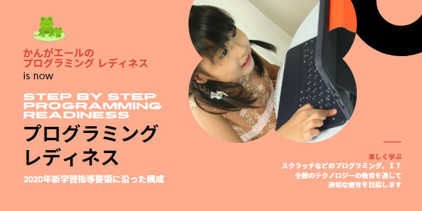
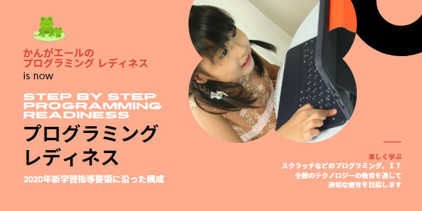

作業の対象となる物の大きさや幅に合わせて、
調整する力を養う教材を紹介する。
子どもといっしょに楽しみ子どもの発達を喜ぶ
穴に差したり、ゴムをかけたりする作業は案外難しいものだ。
対象のサイズや幅をよく見極め、それに合わせて力加減を
しなくてはならないからだ。穴にぴったりものを差すには、親指、人差し指、
中指の三本の指先に力を集中させる必要がある。
また、二本のペグに、輪っか状になったゴムをかけるには、
左右の手の各三本指にかかる力を均等にしなくてはならない。
集中力を切らさずに作業を続けるためには、お店屋さんなどの場面設定や
やりとりといった、楽しんで遊びを展開できるしかけが何よりも大切である。
指導者にとっても、子どもの楽しむ顔を見るのは大変うれしく、
教材を作ろうというモチベーションになる。子どもといっしょに楽しめて、
発達の役に立てることは幸せなことである。
（実践障害児教育2014年3月号に掲載しました。）
友だちや先生と一緒にゲームを行う意味
子どもにとって、教材に向き合って一人でじっくりゆっくりと遊ぶことは大事なことである。
しかし、友だちや先生と教材を互いに貸し借りしたり、順番を待ったりしながら、
ゲームを行うことはより大切である。
ルールを理解し、勝ち負けを経験することは、ソーシャルスキルトレーニングにおける
大切な要素である。
押したり引いたりする動作は、動きが大きくなればなるほど、自分の身体の幅や周りの状況を理解し、
ぶつからないようにしなくてはならない。つまり前後・左右・上下の状況把握が必要となり、
空間認知への取り組みにも役立つ。
一つのことにばかり気を取られることなく、周りの状況も注意する習慣は、
友だちとの関わりやけがの防止などの安全性を高めることにもつながる。
「押す・引っ張る」動作を伴い、ゲーム性のある教材の作り方を紹介しました。
（実践障害児教育2014年2月号に掲載しました。）
集中力を高める、
「はさむ・まわす」ことを狙いとした手作り教材を紹介する。
「愛ディア教材」製作に便利なグッズ
教材をきれいに、手早く仕上げるのに便利な物を紹介する。
1、しっかりとした空き箱やリボン。食器や電気製品の箱はわりに頑丈である。
2、コンパスカッター。時間が短縮でき、正確に仕上がる。
3、ピンキングばさみ。フェルトなどの布が切りやすい。
4、スプレーのり。貼ってはがせるタイプは、遊びを展開する際にも便利。
その他、一口パンチ、向きの変えられるホッチキスも備えておくと、重宝する。
集中力を高めるための工夫と環境づくり
子どもたちは、玩具よりむしろ、
身の周りにある家庭用品、調理用品、器具などを
使って遊ぶことに興味を示すことも多い。
身近なものを使った、教材づくりを紹介する。
身の周りにある物で教材製作をするポイント
製作時の留意点は以下である。
1、市販の玩具・教材を模倣して作る。
そのために玩具屋さんウォッチングが欠かせない。
2、複数の雑貨を組み合わせてみる。
3、子どもに注目してほしい位置に、目につく色や目印を付ける。
4、注意が別のところにそれないように、作業する土台を安定させる。
子どもたちは、年齢、発達状況、嗜好（しこう）に加え、そのときの気分に
よっても興味のほどが全く異なってくる。
そのため、指導者は、子どもの状態に合わせて幅広く使えることを
意識して製作したい。
自身の狙いに固執せず、一つの教材でいくつもの遊び方の
バリエーションや楽しみ方を考えておくことも大切である。
「載せる・はめる・付ける」ための教材で遊ぶことの意義
楽しみながら発達を促す、手先を使う遊び。
今回は「つかむ・落とす」を狙いとした手作り教材を紹介する。
子どもたちは、手先を使う取り組みが大好きだ。
楽しいからこそ喜んで遊び、繰り返し手先を使うことで、
知らず知らずのうちに多方面の機能が発達していく。
一人ひとりの特性や興味に合わせた教材づくり
子どもの得意不得意、こだわり、飽きやすさは一人ひとり異なる。
そのため子どもの興味・関心を探りながら手を替え品を替えて教材を作っている。
また、同じような発達目標の教材であっても、素材や大きさ、遊び方によって
子どもの反応は違う。
遊ぶ様子をみながら少しずつ改良を重ね、いろいろな教材を作り続けていく必要がある。
子どもの特性や発達目標などに合わせて考え出した「アイディア」に、「愛情」をこめて
制作することをプラスした「愛ディア」教材たちをこれから紹介していきたい。
「愛ディア教材」の製作の基本


 
